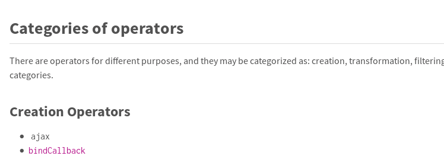

La Programmation Réactive Et CycleJS


Quelques rappels théoriques
Promis, pas trop
| Singulier | Pluriel | |
|---|---|---|
| Pull / Spatial : | Fonction | Itérateur |
| Push / Temporel : | Promise | Observable |
myObservable.subscribe(
data => {
if (data >= 42) {
const modifiedData = data / 2
doSomethingWith(modifiedData)
}
}
)
// Ou dans un style plus fonctionnel :
myObservable
.filter(data => data >= 42)
.map(data => data / 2)
.subscribe(doSomethingWith)
Programmation Réactive Fonctionelle =
Design pattern Observer en tant que paradigme
...Et RxJS (ou autre) pour se simplifier la vie
 RxJS
RxJS
Des Observables :
const observable1 = Rx.Observable.from([1, 2, 3, 4]);
const observable2 = Rx.Observable.interval(1000);
const observable3 = Rx.Observable.create(observer => {
fetch("https://jsonplaceholder.typicode.org/posts/1")
.then(resp => resp.json())
.then(body => {
observer.next(body)
observer.complete()
)
.catch(err => observer.error(err))
});
Des Observateurs
const observable = ...
observable.subscribe({
next: x => console.log(`Observable sent a value: ${x}`),
error: err => console.error(`Observable sent an error: ${err}`),
complete: () => console.log('Observable is complete')
});
Des Opérateurs
Transformer, combiner, manipuler des observables (mais toujours de manière immutable)
const modifiedObservable = myObservable
.filter(x => x > 10)
const modifiedObservable = myObservable
.map(x => x * 10)
const modifiedObservable = Rx.Observable.merge(
observable1,
observable2
)
const modifiedObservable = myObservable
.delay(1000)
const modifiedObservable = myObservable
.debounce(1000)
Un lot de prise de tête !
- Pourquoi mon observable ne fait rien ? mode Lazy ?
- Mes requêtes HTTP sont exécutées deux fois !
- Hot vs Cold
- Synchrone ou asynchrone ?
- C'est quoi l'opérateur pour faire ça ?
Revenons à la base !
Anatomie d'un observable
- Pourquoi mon observable ne fait rien ? mode lazy ?
Il faut l'appeler (subscribe) pour qu'il se passe quoi que ce soit.
- Mes requêtes HTTP sont exécutées deux fois !
Il y a probablement deux appels à l'observable (subscribe)
- Hot vs Cold
Cold : L'observable crée la source de données à chaque appel (subscribe)
Hot : L'observable utilise une source de données existante
- Synchrone ou Asynchrone ?
Ni l'un ni l'autre : c'est juste une fonction!
Et pour les opérateurs, pas de secret : http://reactivex.io/rxjs
Programmation réactive fonctionnelle.
- Immutabilité
- Fonctions pures (sans side-effects)
- Pure Data Flow (Manipulation de données « En sens unique »)
Manipuler des données c'est bien, Mais le web c'est aussi :
- Réagir à des clics
- intéragir avec le DOM
- Faire des requêtes HTTP
- ...
Cycle.js
A functional and reactive JavaScript framework for cleaner code
CycleJS se charge :
- De créer les observables en entrée de l'application (« sources »)
- De gérer les effets secondaires à partir d'observables en sortie de l'application (« sinks »)
L'application est purement réactive, fonctionelle, déclarative
Drivers
- Génèrent les Observables « Sources » à partir de « Read Effects » : Clics, retours HTTP, ...
- Produisent des « Write Effects » à partir des Observables « Sinks » : changement de structure du DOM, requêtes HTTP...
Drivers inclus :
- DOM (y compris les évènements)
- HTTP
Drivers Communautaires :
- React Native
- SocketIO
- Notifications
- ...
Exemple: Compteur